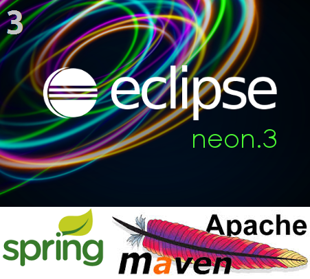
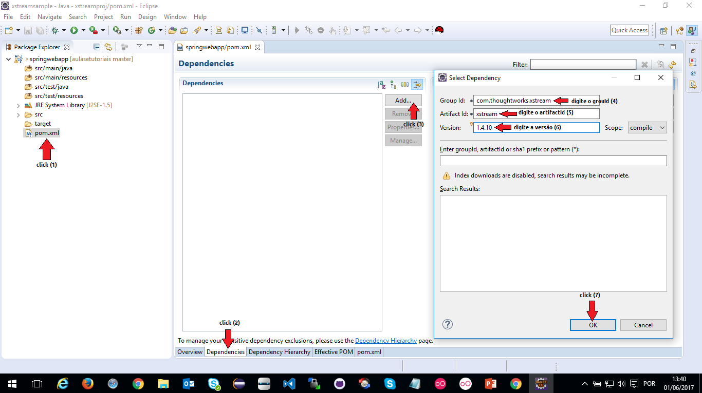
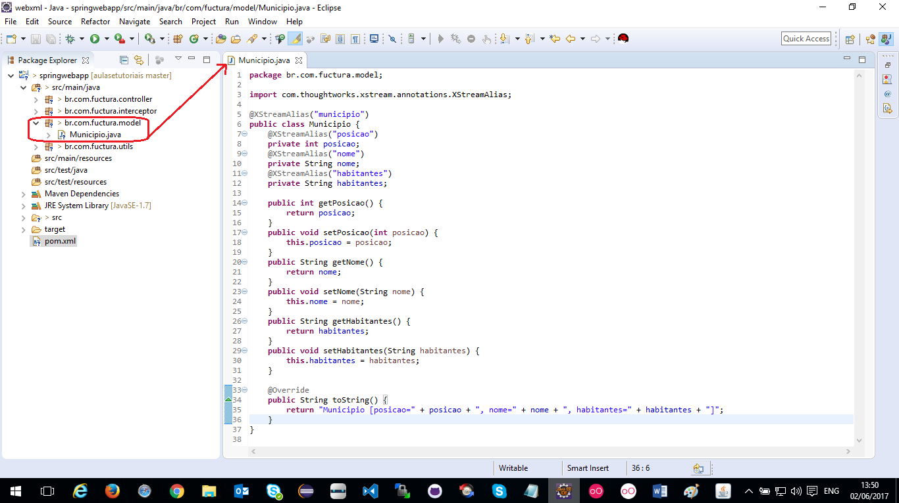
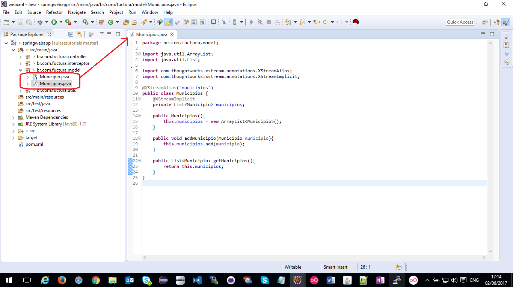
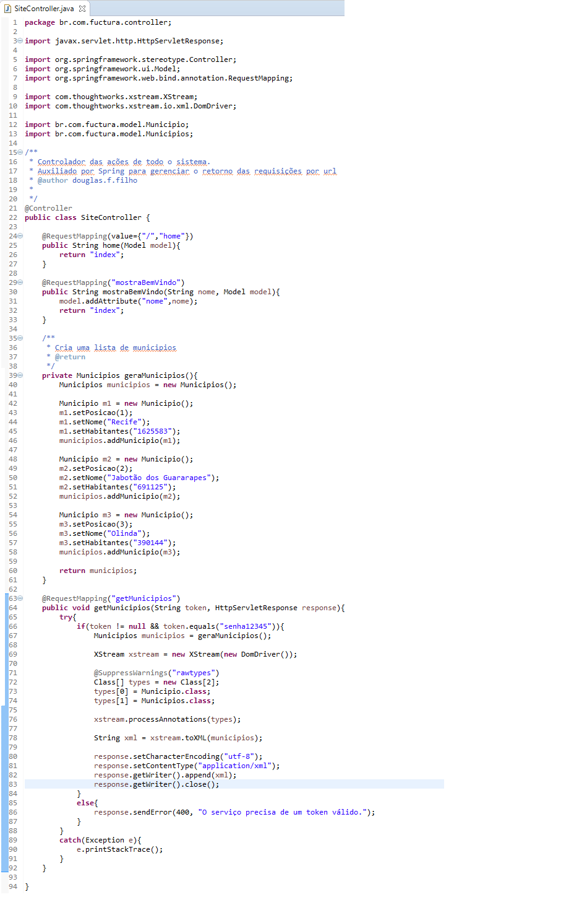
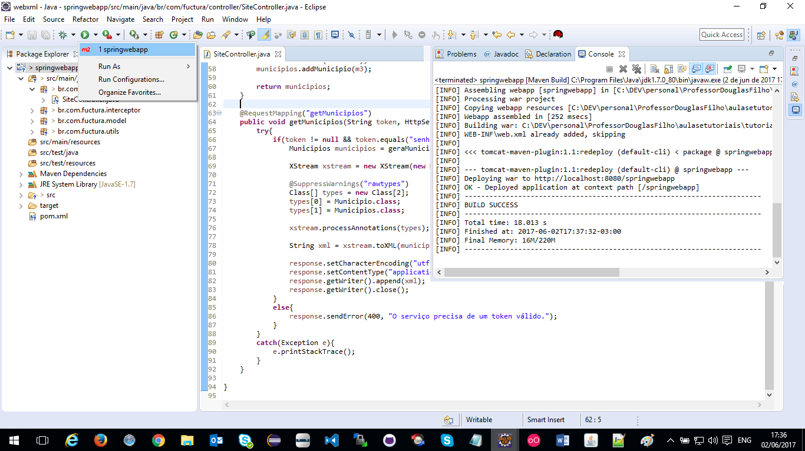
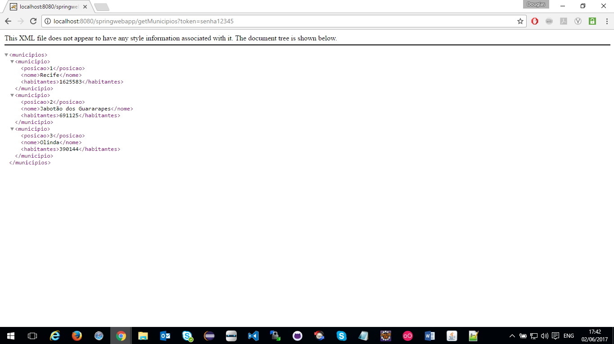

Disponibilize um XML em uma URL
Para prosseguir com este tutorial é necessário que já tenha executado com êxito o Tutorial 3 - SpringMVC
Supondo que já realizou os passos do tutorial 3 e está com sua aplicação rodando no Tomcat
Adicione as dependencias do XStream em seu pom.xml
Crie um pacote chamado "br.com.fuctura.model" dentro de "src/main/java"
Dentro deste pacote crie a classe "Municipio" conforme a imagem abaixo
Dentro do mesmo pacote (model) crie a classe "Municipios" conforme a imagem abaixo
Crie um novo metodo na classe SiteController onde será chamada a criação e disponibilização do XML pela URL
Crie uma verificação por token para validar o pedido
Reconstrua a aplicação com o script de redeploy que já foi criado no tutorial 3.
Para isso, clique sobre a seta (para baixo) como mostra na imagem abaixo e selecione "springwebapp"
Aguarde o termino do preocesso até aparecer a mensagem "BUILD SUCCESS"
Teste a aplicação no navegar usando sua URL (normalmente é http://localhost:8080/springwebapp/getMunicipios?token=senha12345)
Acesse o codigo deste tutorial neste link.
Continue nos acompanhando, acesse nossa home e veja o quanto pode aprender com Java.
Até mais!